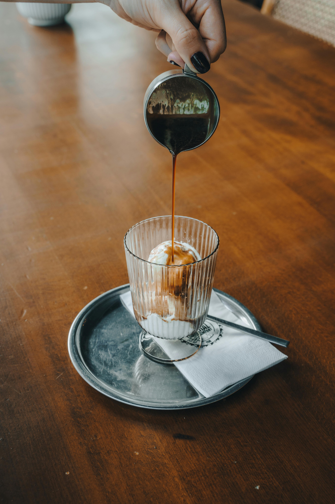

Home
Affogato

Ingredients
- 1 cup brewed espresso or strong coffee
- 2 scoops vanilla ice cream
- Chocolate shavings or cocoa powder (optional)
Instructions
- Combine espresso and vanilla ice cream in a blender or food processor.
- Add chocolate shavings or cocoa powder, if desired.
- Blend until smooth and creamy.
- Serve immediately or refrigerate for a few hours before serving.